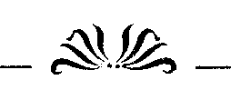
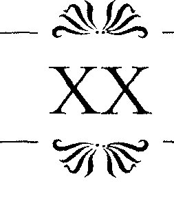

ÜSEYİN ISRAR EDİYORDU. "O genç kız hayatından çok m e m n u n . "
"Adam onu dövmesin diye öyle davranıyor."
" E b u Isa tüm islam âleminde tanınan bir tüccardır.
Malını incitecek kadar enayi değildir."
Esir pazarından çıkmıştık, Hüseyin beni ortasında çeşme olan bir küçük meydana getirdi. Karemsi tuhaf alan bir yamaçtaydı. Yerlerdeki taşların Romalılar'dan kalmış oldukları belliydi ve herhalde o günden bu yana da kimse onlarla ilgilenmemişti.
Sucuların, şekercilerin ve kabadayılığa özenen çocukların bağırışları arasında zincirli ayısıyla bir çingene 126 A N N CHAMBERLIN
vardı. Uyuşuk, zayıf hayvanın sarı postu uyuz gibiydi, aptal bakışlarla seyrettiği bu insanlar âlemine mutlaka ormandan kaçırılarak getirilmişti. Çingene onu itekleyerek oturttu. Ama bu tek numaraları olarak kaldı, çünkü hayvan oturur oturmaz herkesi utandıracak bir biçimde pembe cinsel organlarını ortaya döktü ve yalanmaya başladı. Bu seyreden çoluk çocuğu çok eğlendirdi ama hiç kimse çingenenin tasına para atmadı.
Sanıyorum Hüseyin benim kafamı dağıtmak amacıyla bu gösteriyi bahane ediyordu. Ama bu olanaksızdı, tam tersine sabrım daha da tükenmişti, saldırganlığımsa azmıştı. Arkadaşım tam ilerleyecekken geri dönüp adama günün tek meteliğini vermeye kalkınca, eline vurdum.
"Lütfen/' dedim, davranış biçimimin kabalığı için özür dileyebilirdim ama bunun nedeni için asla. "Keseden tek bir pulu bile boşa harcamamaksın, yarın belki iki katı gerekecek."
Hüseyin konuşmak üzere ağzını açtı, ama ne demek istediğini asla anlayamadım. Tek gördüğüm küçük kahverengi bir elin onun beline doğru uzandığıydı. El uzandı ve arkadaşımın kesesini kaptı.
"Hırsız!" diye çığlığı bastım.
Sonra beynime kazınmış bir kelime aklıma geldi.
"Oğlan." Ve avazım çıktığı kadar bağırdım. Bunu iyi biliyordum çünkü Hüseyin bana bunun bir çeşit ağır hakaret olduğunu defalarca söylemişti. Küçük erkek çocuk anlamına gelen bu kelime, kavgalarda ağır bir küfür olarak kullanılabiliyordu.
Aşk perisi Cupido, topuklarıma ve kollarıma güç vermişti galiba. Madonna Baffo'nun fiyatının yarısının, avucunıuzda taşıdığımız yarısının, bu beter meydancıkta yok olması karşısında yaptıklarım, tam tamına lirik bir şairin anlatabileceği biçimdeydi. Hüseyin'i kenara ittim, (Safiye Sultan 127
kahverengi elin sahibinin çıplak kahverengi bacağına bir çelme attım ve keseyi içinden bir pul bile eksilmeden geri aldım. Bunu anlatmak yapmaktan daha uzun sürerdi, öylesine çabuk davranmıştım. Ama şair, benim çığlığımın sonuçlarını hesaba katamazdı. Meydanı dolduran Türkler, hayâsızlığını onların orta yerine taşıyan çingeyi cezalandırmak için zaten bir bahane arıyorlardı, benim bağırışım bunu vurgulayan bir ses olmuş gibiydi.
Gençlerden birkaçı ben onu yakalamadan önce kaçmasını engellemek için yolu kesmişlerdi. Ben muzaffer bir edayla Hüseyin'İn yanına döndüğümde onlar sıraya girip cezalandırmanın geri kalanına çoktan başlamışlardı. Durum öyle itiraz edilmezdi ki, kara gözleriyle tıpatıp ona benzeyen babası sesini bile çıkartmamıştı. Adam, zincirin el verdiğince bir hızla meydandan uzaklaştı. Doğrusu buna hız denilemezdi çünkü, benim meydandaki çığlığımdan hiçbir şey anlamayan tek yaratık olan ayı, oturduktan sonra kendini zar zor toparlayıp ayağa kalkabilmişti.
Hüseyin davranışlarımda şiirsel bir şey olduğunu sezmişti. Daha sonra bana öylesine bir teşekkür etti ki, Türk cömertliğini ifade etmek için kullandığı Venedikçe kelimeler oldukça yetersiz kaldı. Bir süre ses çıkarmadan kesesinin iplerini sıktı.
Bıyıklarını ve sakalını sıvazladı, en sonunda şöyle dedi. "Bu genç kadının özgürlüğünü sağlamak senin dünyada en çok istediğin şey, bundan eminsin değil mi?"
"Dünyada en önemli şey...,> Nefes nefeseydim, bunun nedeni hâlâ bir tehlike olduğunu düşündüğümden değildi, belki Hüseyin öyle olduğunu sanıyordu ki, bu da benim umurumda değildi, yalnızca sabırsızlığıma gem vurmaya çalışıyordum. Bu kısa, tombul, evine meraklı Suriyeli'nin böyle umutsuz bir d u r u m u kavraması ise olanaksızdı.
128 A N N CHAMBERLIN
"Yapabileceğimiz bir şey var," diye mırıldandı.
"San M a r k o aşkına neden duruyorsun?''
San Marko sözü kılını bile kıpırdatmadı. " D a h a çok para yapabilirim."
"iki yüz kuruş?"
"Belki daha fazlasını. Çok, çok daha fazlasını..."
" Ç a b u c a k ? "
"Belki de Allah izin verirse akşam olmadan."
"O zaman yapalım. Tanrım hiç zamanımız kalmadı."
Hüseyin elini sakalından çekti ve başını salladı. Kü
çük çingeneyi dövdükleri için hoplayıp zıplayan çocuklardan birinin yakasına yapıştı. O n a hızlı hızlı bir şeyler söyledikten sonra, kurtarılmış kesesini açıp üzeri garip şekilli, ekmek peynir parası diye tarif ettikleri saçma sapan metal paralardan küçük bir tane verdi. Oğlan fırladı gitti, kıymetli paracıklarımızdan bir tanesinin gitmesini sineye çektim. Hüseyin nasılsa bir çare bulacaktı.
" G e l , " dedi kolumu çekerek.
Bu acayip yerden ayrılmaktan m e m n u n d u m ama yine de sordum. " N e r e y e ? "
" H a m a m a . "
" H a m a m a mı? Evde zaten senin hamamın var."
"Evet, üzerimdeki denizi orada yıkadım. Ama evdeki hamam genel bir yer değildir."
"Yani hiç anlamıyorum. Kazanmamız gereken iki yüz kuruş var ve sen gidip hamam sefası yapmak istiyorsun."
Benim kabalığımı yumuşatmak istercesine Hüseyin,
"Şaşırabilirsin," dedi. "Pek çok iş hamamlarda çözümlenir. Siz Venedikliler, Türkler'in çok kapalı bir toplum olduğundan şikâyet eder ve ticaret sırlarımızı sizlere açmadığımızı, b u n u n eşitliği bozduğunu söylersiniz. Kim bilir belki arada bir yıkansamz böyle sırlar olmaz."
Safiye Sultan 129
Büyük, yaygın, geniş bir çarşıda ilerliyorduk. Venedik için G r a n d Kanal neyse burası da Konstantinopolis için oydu. Yerel kültürün düzeyi açıkça ortadaydı. Pahalı kahvehanelerin tenteleri, kumaşçılar, ağaçlı meydanlarda sayısız cami...
Tüm gün çalışan çöpçüler, inanılmaz bir titizlik içinde kaldırım taşlarını süpürüyorlardı. Bunu her köşesi fare yuvası çöplüklerle dolu, Venedik'le kıyaslayınca, hiç gübrelenmemiş bir bahçe geliverdi aklıma. Orada nasıl olur da bir şeyler yetişebilirdi? Ama açıkça görülüyordu ki, gübre hiç problem değildi. Atılan her yeni adım, kalabalıktan bir başka yüzü getiriyordu insanın gözünün önüne.
Dünyanın bir o ucundan, bir bu ucundan yüzler... Bazı Türk yüzleri, Rum yüzleri; hepsinde aynı kararlılık, hayatını sürdürebilme kararlılığı... Ama eğer bir yüzde mutluluk işareti yoksa, onda hayatiyet olabilir miydi?
Sarayların süslemeleri yolun telaşesine zıt bir oturmuşluk içindeydi. Pek çoğunun tarihi, M ü s l ü m a n l a r ı n burayı almasından öncelere dayanıyordu. Bir yabancı için buraların zenginlere mi, yoksa perişan yoksullara mı ait olduğunu anlamak olanaksızdı. Zengin bir Türk, daha çok dar bir arka sokağın dibinde oturuyordu. Bu çelişkili dünyada sadelik, eğer görmeyi başarabilirsen, büyük bir gösterişi saklıyordu.
Konstantinopolis'ten daha fazla ticaretle bütünleşmiş bir başka şehir yoktu. Kemerlerinin altında bir araya gelmiş işadamlarının konuşup durduğu yollardan geçerek Kapalıçarşı'ya geldik. Bu, sekiz demir kapıya, sayısız kubbeye sahip büyük pazarda her istediğinizi satın alabilirdiniz; leblebi de, külçe altın da... H a t t a Türkler'in dolambaçlı metodlarım kullanarak bütün başkente istediğinizi sattırabilirdiniz de. Ticari anlaşmaların karmakarışık yapısı da, daha öncekilerden bir mirastı.
130 A N N C H A M B E R L I N
Amcam Jacope yüzünden bu konularda bilgim vardı. İslam âleminde faiz yasaktı, ama bu bile ticareti durd u r a m a m ı ş t . Hiçbir risk olmaması için iki yöntem uygulanıyordu. Birincisi faizsiz borçlanmaydı. Diğeriyse, de
ğerli bir şeyleri takas etmekti; at, ev ve hatta bazen bir çift ayakkabı gibi. Mal önce bu borçluya satılıyordu, sonra da üzerinde anlaşılmış bir yüzde eklenerek borç verene.
Kuytu köşelerinde değişik paralarla garip oyunlar oynanan Kapalıçarşı bizim amacımıza en uygun yerdi herhalde. Ama değilmiş... T ü r k l e r i n çapraşık ve karışık yöntemlerini unutmuştum. Hüseyin beni dışarı çıkardı, yeniden yola koyulduk.
Kuzeyi duvarlarla kaplı, ağaçların altında düzensiz mezarların olduğu bir yere gelmiştik. Duvarların arkasını görebilmek olanaksızdı. Ama kırmızı elbiseli yeniçerilerden buranın saltanata ait bir yer olduğu belliydi. Padi
şahların ö n ü n e gelenle yatma alışkanlıklarının sonucu olarak, imparatorluğa yayılmış bir yığın saraya gereksinimleri olmalıydı. Kapatmalar ve babasız çocuklar...
Böyle cinsel konular Hüseyin'i ilgilendirmiyordu, o daha çok sağ tarafımızdaki camiyle ilgiliydi. Tam öğle namazı zamanıydı. Büyük kubbelerin etrafındaki göğe doğru yükselen minarelerden ezanlar okunmaya başlanmıştı.
" M i m a r ı Yakup Şah" dedi Hüseyin. "İki üç nesil önceki padişahımız Sultan Beyazıd için yapılmıştır."
Bu bina ile zerre kadar ilgilenmiyordum ve Hüseyin'in diğerleriyle birlikte ibadet etmek istemesi canımı sıkmıştı.
"Kaybedecek hiç vaktimiz yok," diye ısrar ettim.
"Allah'la geçen vakit kaybedilmiş değildir," dedi.
"Üstelik t ü m dünya Mekke'ye dönmüşken kim iş yapabilir?"
Safiye Sultan 131
"Venedik'in çanlarını dinlemeyi tercih ederdim."
Ben dışarda meydanda kaldım, meydanın karmaşası r u h u m u n karmaşasına yetişemezdi. Yeniçeriler nöbette olduklarından namaza gitmemişlerdi. Güneş, minarenin tepesinden dönmüş ve ortalık soluk, erken bir mart ışı
ğıyla dolmuştu. Bu yumuşak sıcaklık bir soğukluğun üzerini örtüyor gibiydi.
Kumrular bu ışığın çiftleşmek için en uygun ortamı yarattığını düşünüyorlardı. Kuşlara özgü bir tavırla kalabalık gruplar eşlere bölünmüştü, ortalıkta henüz yavru g ö r ü l m ü y o r d u . Koyu m o r u m s u renkli erkekler ince
" h u " ve kaim " p u " sesleriyle etrafında dolandıkları dişilerinden başka her şeye karşı kayıtsızdılar. Kuyruklarını kaldırımlara sürtmek bu yaltaklanmanın parçasıydı. Tüylerinin nasıl paralanmadığına şaşmıştım. Aksi takdirde bir daha uçaınazdı bu zavallı aşk sarhoşları. Bir sürtünme sesi duydum. Sese döndüm, neredeyse gücü tükenmiş bir kumru derinden gelen "hu"lar çıkararak, adeta kendinden geçmiş bir vaziyette mezar taşının birinin tepesinde yukarı aşağı gidip geliyordu. Bir diğeriyse aynı şeyi bir ağacın dışarı fırlamış köklerinde yapıyordu.
Beyaz dişiler h e p birlikte erkeklere yüz vermeme halindeydiler. H e r zamanki gibi yerlerdeki kırıntılarla meşguldüler. O n l a r havalanınca, çeşmeden mezarlara, mezarlardan çeşmeye sonuçsuz ve usandırıcı takipçileri bu " h u " ve " p u " mırıltılarıyla peşlerinden gidiyordu.
Cami kemerlerinde bir yükselip bir alçalan Arapça nağmelerin arasında birden fark ettim ki, bu tüylü kafaların dışındaki tüm erkeklerden kopmuş gibiydim.
Bu d ü ş ü n c e n i n içinde dallanıp b u d a k l a n a c a k t ı m ama ibadet edenler dışarı çıktı. Cami boşalmıştı. Hüseyin yanıma geldi ve beni caminin batısına, hamamın olduğu yere doğru götürdü.

132 A N N C H A M B E R L I N
"Bu da Sinan tarafından Beyazıd için yapılmıştır, dedi.
"Ama hep Hıristiyan bir geçmişten yararlanarak."
Hamamın girişindeki mermer sütunların süslemelerini işaret ettim. Birbirini izleyen daireler ve ovallerin ta
J*
mamladığı tavus kuşu motifleriydi bunlar. Belli ki eskiydiler ve Bizans işiydiler.
Hüseyin, "maşallah" çekerek, benim ses t o n u m u hoş gördüğünü belirtti.
Konstantinopolis'in onların eline geçmesi tabii ki Allah'ın isteğiydi. Bunu anlayabiliyordum, "ebe sara sara" diyen amcam Jacope da, Tanrı'mn gücünü böyle anlatırdı. O meşum sonu bir kez daha acıyla hatırladım, hâlâ kabullenememiştim.
" Ş u n u d a u n u t m a , " d e d i H ü s e y i n , " B u r a n ı n e n önemli pagan tapınaklarını yakıp yıkanlar Hıristiyanlar'
dır."
Arkadaşım değerli paralarımızı dağıtmaya devam ediyordu.
XIX
AMAMA GİRDİĞİMDE beni ilk allak bullak eden görüntü, sırtlarında küfelerle ilerleyen köle zinciri oldu.
B u n l a r suyun kaynar tutulabilmesi için ateşe sürekli o d u n taşıyorlardı. Gözle sınırlarını göremeyeceğimiz kadar büyük olan binanın kadın ve erkeklere ayrılmış olan iki b ö l ü m ü n ü n de sıcak suyu tek ocaktan sağlanıyordu.
Ama bu, aralarında yaşlıların da olduğu kölelerin işini kolaylaştırmıyordu.
Yüzümü buruşturdum. Hüseyin'in belirsiz planı iş-
Safiye Sultan 133
lemezse, kim bilir zavallı Sofia Baffo'nun ince, narin, genç vücudu hangi ağır yükler altında ezilecekti?
Hüseyin aklımdan geçenleri anlamıştı, güven anlamına gelen bir şekilde elini omzuma koydu ve beni binaya soktu.
"Bana güven, Allah'a güven," dedi. "Ve Ebu isa'ya da güven. E b u İsa kendi malına zarar verecek bir şey yapmaz."
Beni soktuğu ilk oda pek çok küçük odacığa bölünmüştü. Bunların arasındaki alçak duvarlar, sudan lekelenmiş, gözenekleri küflü, zamanın yıpranması içindeki mermerlerle kaplanmıştı.
ikimiz birden boş bir odacığa hamle ettik, Hüseyin daha öndeydi. " D o s t u m sana şunu söylemeliyim ki, kölelikle ilgili çok tuhaf bir algılamanız var. Ahlaken b u n u n yanlış olduğunu düşünüyorsunuz ama siz Venedikliler denizlerin en ünlü kölecileri değil misiniz?"
Kafalarına sarılmış havlularla, bedenleri çıplak, bellerinde kırmızı beyaz çizgili kumaşlarla köleler, odacıklar arasında oradan oraya dolaşıyorlardı. Ara duvarın tepesinden rahatlıkla bizi görebilecek kadar uzun boylu bir Afrikalı b a n a çok sık d o k u n m u ş bir kumaş uzattı, iki ucundan püsküller sarkıyordu. Elimi üzerinde, çevresinde dolaştırdım.
Hüseyin bölmenin üzerinden konuşmasına devam ediyordu. "Rahmetli amcanın da ihtiyar zenci Piero'su vardı."
Kumaşı merakla incelemem uzun Afrikalı'yı eğlendirmişe benziyordu. Kaim, morumsu dudaklarında eğri, alaycı bir gülüş vardı. Kumaşı işaret edip "peştemal" dedi. Uzerimdekileri çıkarıp ona sarınmam gerektiğini anladım. Bunu yabancıların, özellikle de bu inançsızların arasında yapmaya hazır değildim. Yan odacıklardaki 134 A N N CHAMBERLIN
adamların hepsi, Türkler'in barbar geleneği gereği sünnetliydiler. Bu Afrikalı bile belki usturanın hışmından geçmişti. Kendimi bu gerçeğin karşısında çok rahatsız hissettim, erkeklik organımın ağırlığı altında eziliyordum.
Yine de şunu söylemeliyim ki, hamamda bir namus anlayışı vardı, alaycı bir gülüşle bölmenin üzerinden bakan Afrikalı bile buna uyuyordu ve başını çevirmişti. Bu, Hüseyin'in anlattığına göre dinin bir gereğiydi. Aynı ha-'
m a m d a yıkanan erkekler arasında bile bir u t a n m a söz konusuydu. Benzer peştemallarm altında benzer sakatlıklar olduğunu düşünmek beni rahatsız ediyordu. Öylesine aptalca bir korku içimi sarmıştı ki, sanki peştemalım belimden sıyrılırsa, onun içindekini de kaybedecektim.
Bu, yapmam gerekenlerin hızını oldukça yavaşlatıyordu.
O sırada Hüseyin beni çocuksu bir tavırla cesaretlendirip d u r u y o r d u . O n u n b e n d e n uzakta olmadığını ima etmeye çalışıyordu ama, bu beni, onun da bu yaratıklardan biri olduğu gerçeğinden koparamıyordu.
"Babanın sağlığında da evde çalışan en az dört beş
kişi vardı."
Hüseyin haklıydı ama, ona hak verdiğimi söyleyemezdim. "Tanıdığın biri olduğunda iş farklıdır," dedim.
"Hatırladığım kadarıyla, seni emzirmiş olan dadın da özgür biri değildi ve bu senin onu daha az sevmeni gerektirmemişti."
Bu köşeye sıkışmışlıktan bunalmıştım, kendimi odacıktan dışarı attım, bana güven veren elbiselerim geride kalmıştı. Hüseyin'i çıplak görünce tuhaf olmuştum. Teni balık solgunluğundaydı, kadın gibi tüysüzdü de, üstelik kadınımsı göğüsleri ve koca bir göbeği vardı. En şaşırtıcı olan başıydı, onu daha önce ya kafasında Venedik işi bir şapka, ya da Türk sarığıyla görmüştüm. Tepesinde dü-
Safiye Sultan 135
güm gibi bir iz olan kafası cascavlaktı. İnsanın kafasındaki yara bere izleri de en az çıplaklığı kadar zarafet dışıydı.
Afrikalı bize birer çift terlik verdi. Atkıları sedef kaplıydı ve kayıp düşmeyi engelliyordu. Tabanlarında
"Santa Lucia"nın bayrak makarasındakine benzer koca koca tahtalar vardı, için için bunlarla kendimi Pizza'da dolanan bir fahişe gibi hissediyordum.
Hüseyin, "Bu nalınlarla hem soğuk mermere, hem de pis sulara basmaktan kurtulursun, üstelik kayıp düşmeni de engellerler," diye övüp duruyordu garip tahta terlikleri.
Bu arada, bana yardımcı olarak, belimdeki peştemalın düşmemesi için bir düğüm attı. Hatta ben ayağımda-kilere alışmak isterken, yürümeme yardımcı bile oldu.
Bu iki hareketinden başka, benim buraya yabancı oldu
ğumu hatırlatacak başka bir şey yapmadı. O sırada ben bu tavırların, artık bana ne kadar alışılmış geldiklerini düşünüyordum.
Varlığım Hüseyin'i, benim ondan ve odadaki diğer adamlardan rahatsız olduğum kadar rahatsız etmiyordu galiba.
Sanırım bu gözlem yetersizliğinin nedeni kafasının başka bir yere, işe yoğunlaşmış olmasındandı. Tam o sırada evden bir köle gelmişti, herhalde biraz önceki pazarlığımızla ilgiliydi bu. Adamın elinde küçük bir sandık vardı. Bunun, yaklaşık bir ay önce "Santa Lucia"ya yüklenmiş olan samana sarılmış Venedik camıyla dolu olanlardan biri olduğunu fark ettiğim an saçmalamaktan vazgeçip kendime geldim.
" O n a bu hamamda bir müşteri bulmanın mı peşindesin ?" diye sordum.
Hüseyin güldü, ama öyle ya da böyle bir cevap vermedi. Köleye, sandığı kendi odacığına bıraktıktan sonra 136 A N N C H A M B E R L I N
yanımıza gelmesini emretti. Pazarlığın da bizim kıyafetimize benzemesi durumunda hamamların ne garip alışveriş yerleri olabileceğini anlamıştım. Bir pazarlıkçının niyetini saklaması gerekirdi, elbise kıvrımları da buna yardımcı olurdu. Buradaysa...
Yine de Hüseyin'in kendi kazancından benim uğruma fedakârlık etmesini takdirle karşılamıştım. Değerli kadehler muhtemelen gerçek fiyatlarının yarısına giderdi burada, ama yine de bu davranış beni etkilemişti. Cömert evsahibime karşı daha nazik olmaya karar verdim.
Adamının yanımıza gelmesini beklerken Hüseyin laflamaya devam etti. "Bir kadırga kölesinin hayatı özenilecek bir şey değildir, bundan eminim."
"Dışarda odun taşıyanların da..."
"O gördüklerin Özgür insanlardır, oduncular onlar."
"Anlıyorum. Peki o zaman neden o kadar, o kadar..."
"Umutsuzlar?"
"Evet, neden umutsuzlar?"
"Özgür bir adamın akşam evine ekmek götüreceği garanti değildir. Oysa, sahibi eğer parasını batırmıyorsa bir kölenin böyle bir sorunu yoktur. Özgür bir adam, açlıkla, çocuklarının nafakasıyla, büyüklerinin hastalıklarıyla, yaşlılıkla, işin yıpratıcılığıyla savaşmak zorundadır.
Bir kölenin sirtındaysa bu yükler yoktur."
Uzun Afrikalı'ya yine gözüm takılmıştı. Odada ritmini yalnızca kendisinin duyduğu bir Afrika müziğiyle sallanirmışçasma dolanıyordu. Yukardan bir edayla yapmacık bir şekilde tebessüm ediyordu, tepesine yeniçeri başlığı gibi sardığı havlular ne onun giderek eskimesinin, ne de sahibinin paralarının göstergesi olabilirdi. Venedik'teki Aziz Gummarus yatırını anımsadım. H e r zaman dolu olurdu. Adaklar dolar taşardı etrafında. O tükeniş-
Safiye Sultan 137
lerin, yoklukların aziziydi ve daha çok da hamalların...
Biz ona "Zannis" diyorduk. Bir umutsuzun özgür yaşamı, işe yaramadan sona eriyorsa...
"Tamam anlıyorum, haklısın. Ama Hıristiyan ya da Müslüman, siyah ya da beyaz, fırıncının ateşindeki herhangi bir odun gibi, adsız bir çabanın içinde yiten, adsız bir beden olmak da bir yaşam demek değildir. Köle ya da Özgür, aslında herkes buna dahil. Ben topluma karşı suç işlemişlerin dışında, hiç kimsenin kadırgalarda köle olarak kullanılmaması gerektiğine inanıyorum. Buna ev hizmetlileri dahil değil tabii, onlar zaten sahiplerinin evinde ve güvenlik içindedirler."
H ü s e y i n ' i n kölesi s o n u n d a gelmişti. H ü s e y i n ' i n özüyle sözünün bir olmasını doğrusu takdir ediyordum.
Üçümüz birlikte yan odaya geçtik. Burası da yoğun bir erkek kokusuyla kaplıydı. Tavandaki k u b b e d e yıldız şeklinde bir yığın pencere vardı, buralardan gün ışığı süzülüyordu. Bizans işi olduğunu sandığım dört aslan başlı çeşmeden dökülen soğuk sular, önce mermer zemine yayılıyor, sonra da kenarlardaki küçük kanalcıklardan akıp gidiyordu. Bir köle hizmetkâr, Hüseyin'in sözlerini haklı çıkarırcasına kırmızı beyaz kumaşların üzerinde uyuyordu. Bu sözler, sedeflerin ve tahta topukların mermerdeki tıkırtılarının arasında insana acı vererek yankılanıyordu.
"Yoksul Kafkas köylülerinin çocuklarını, özellikle de kız çocuklarını zengin istanbullu tüccarlara satmaları Öylesine yaygındır ki dostum. Yalnızca kendileri için para sağlamak değildir amaçları. Asıl önem verdikleri, çocukların iyi beslenmesi, iyi giyinmesi yani zavallı köyle-rindekinden daha iyi olanaklara kavuşmalarıdır."
Bu odada, köle, Hüseyin'in v ü c u d u n a kireçli bir kostik sürdü, içinde çok az da arsenik varmış. Bunu gözlerime ve ağzıma değdirmemem için beni uyarmaları ge~
138 A N N C H A M B E R L I N
rekmiyordu. Hiç kimse beni böyle bir işleme razı edemezdi, aşağı yukarı on beş dakika sonra köle, Hüseyin'i bir midye kabuğuyla temizlemeye başlamıştı ve onun do
ğal olmayan kılsızlığının sebebini anlamıştım. Batıya gittiğinde uygulayamadığı bir modaydı bu.
"Biliyor musun, Sultanımız Kanuni Süleyman, Allah selamet versin, diğer padişahlardan daha farklı, garip bir iş yaptı. Oğullarının annesiyle evlendi. Genellikle Sultanın haremi, satın alınmış talihli kızlardan oluşur. Bunların hepsi de Valide Sultan olabilmek için karda çıplak ayak koşmaya razıdırlar. Tabii büyük bir şey. imparatorlukta bir kadının ulaşabileceği en yüksek mertebe. Sultan'dan sonra en yetkin insan odur. Bunda acınacak ne var? Görüyorsun bizim sultanlarımız da köle kadınlardan olmadırlar."
Hüseyin bunları söylerken kırmızı beyaz çizgili peş-
temalını, kölenin, onun cinsel organının etrafını da kıllardan temizleyebilmesi için açtı. Buna Türkler arasında ne kadar kalırsam kalayım asla razı olamazdım. Belki de bu saçma sapan sünnet oyununun başlamasının nedeni bir midye kabuğu kazasiydı, kim bilir?
Yine de ısrarlara direnemeyip köle tarafından sabunlanmaya razı oldum. Mis kokulu bir suyla beni bol bol sabunladıktan sonra adam ellerini bir havluyla kuruladı. Kıllı bir bezle beni ovalamaya koyuldu, ardından da kurutulmuş bir kabak lifiyle bu işi tekrarladı. Üzerimde tek kullanmadığı galiba bir tel zımparaydı, ama yine de bu yaptıkları v ü c u d u m a iyi gelmiş, beni rahatlatmıştı.
Bir midye kabuğunun yapacağının daha fazlasını bu arada kaybetmekten korkmuştum. Ama harika bir cilde kavuşmuştum. Eksik dişli bir sırıtışla bana bakarak konu
şan hizmetkârım sanırım hiçbir müşteriden bu kadar kir çıkmadığını anlatmaya çalışıyordu.

Safiye Sultan 139
Bir başka kurnada ben yaşlarda bir genç, yaşlı ve hasta babasına aynı şeyleri yapıyordu, bu manzara benim içime dokunmuştu.
"Esaret ne zannettiğin kadar umutsuz, ne de güçsüz bir durumdur." Hüseyin, su seslerinin arasında konuşuyordu. "Özellikle de senin Sofla gibi yetenekli ve güzel bir kız için."
"Ve kabul et ki, onu bıraktığımızda hayatından çok m e m n u n d u , " diye tekrarladı. "Bu sabah tadına vardığı yiyeceklerden sonra senin ona sağlayacaklarınla yetinebi-lir mi artık? Affedersin ama dostum, o çok uçarı ve dönek bir kız. Pahalı zevkleri var ve senin gibi bir öksüz denizcinin bunlarla başa çıkmaya çalışmasından üzüntü duyarım."
" H a y d i , gel mutlu ol. Sana o genç zenci kızı yine yollayayım ve bu gece onu dışarı atma. O n u n tadını çıkar. Seninle onun da hayatı güzelleşir. Ve Allah isterse senin olur. O n d a kendini kaybet, göreceksin ki Sofia Baffo'nun hayali bile seni bir daha kandıramayacaktır.
Madonna Baffo, Allah'ın ona sunduğu kaderden hoşnut.
Dostum sen de kendi kaderinden hoşnut ol."
H a m a m ı n üçüncü b ö l ü m ü n e geçerken sertçe başıma götürdüğüm elim, asla hoşnut olmayacağımın işaretiydi.